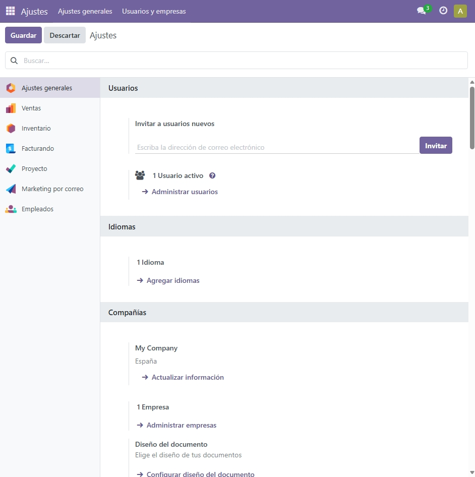
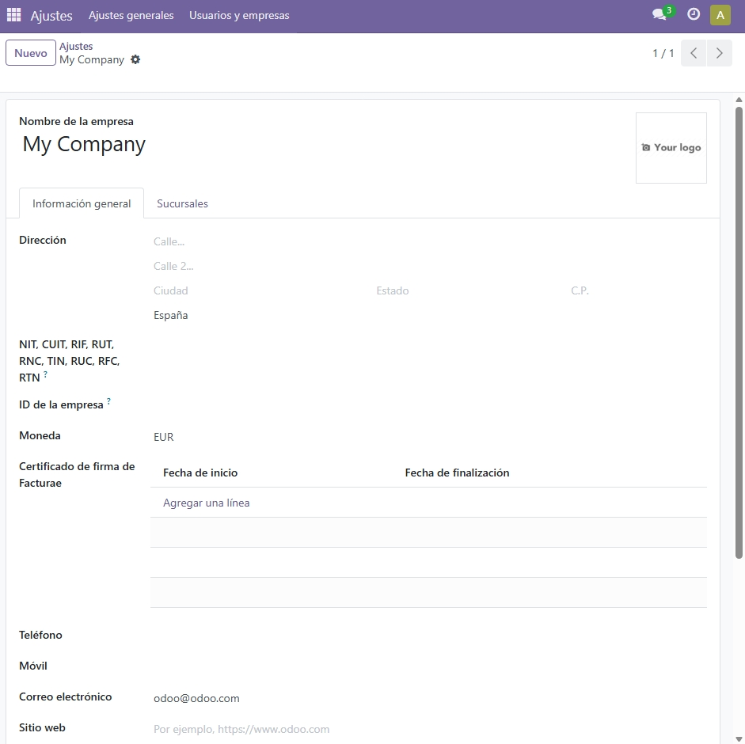
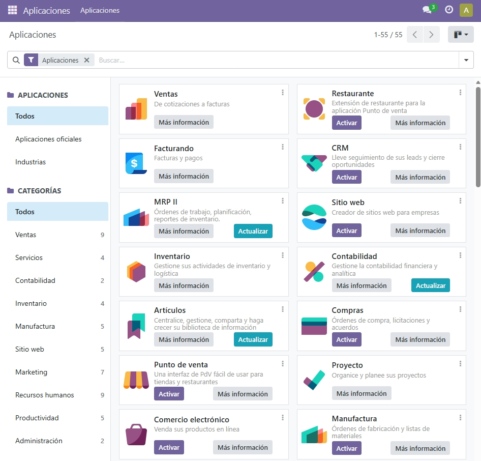
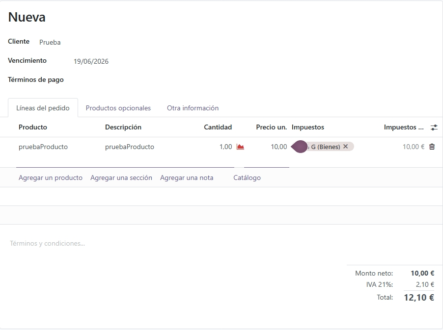
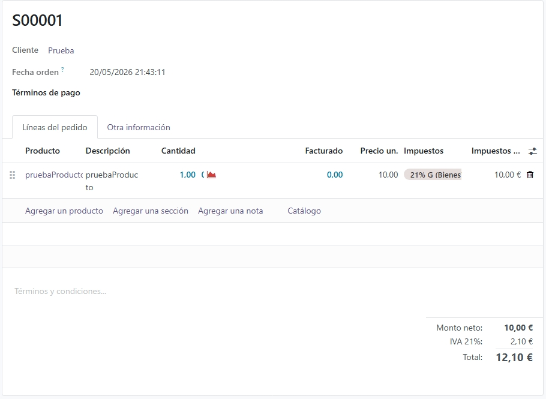
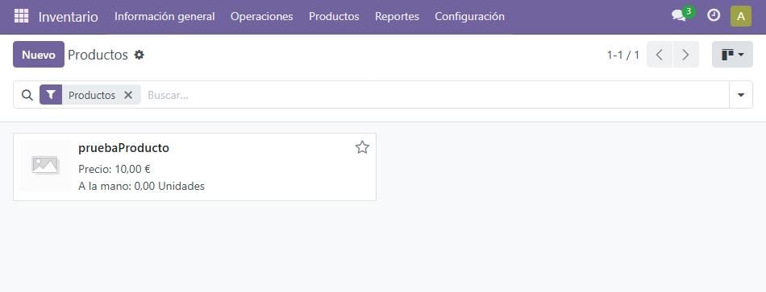

Administración de Odoo
Una vez que Odoo está instalado y hemos creado la base de datos, el siguiente paso es configurarlo. Odoo tiene muchas opciones de configuración que se pueden ajustar desde el panel de ajustes.
Panel de Ajustes
Para acceder a los ajustes hay que ir al menú de la izquierda y hacer clic en Ajustes. Desde ahí se pueden gestionar los usuarios, los idiomas, las empresas y muchas otras opciones del sistema.

Panel de ajustes generales de Odoo
Configuración de la empresa
Lo primero que hay que hacer es configurar los datos de nuestra empresa. En Ajustes, dentro de la sección Compañías, hacemos clic en Actualizar información para rellenar el nombre, la dirección, el teléfono y otros datos.

Formulario de configuración de los datos de la empresa
Instalación de módulos
Odoo funciona por módulos. Cada módulo añade una funcionalidad nueva al sistema. Para instalarlos hay que ir a Aplicaciones desde el menú principal y hacer clic en Activar en el módulo que queramos instalar.

Panel de aplicaciones con los módulos instalados en Odoo
Módulo de Ventas
El módulo de Ventas permite gestionar presupuestos, pedidos de clientes y hacer seguimiento de las ventas. Una vez instalado podemos crear presupuestos y convertirlos en pedidos confirmados.
Vista principal del módulo de Ventas en Odoo
Crear un presupuesto
Para probar el módulo hemos creado un presupuesto de prueba con un cliente y un producto. En Ventas hacemos clic en Nuevo, añadimos el cliente y los productos y guardamos el presupuesto.

Presupuesto de prueba creado en el módulo de Ventas
Confirmar el pedido
Una vez creado el presupuesto podemos confirmarlo haciendo clic en el botón Confirmar. Esto convierte el presupuesto en un pedido de venta confirmado y queda registrado en el sistema.

Pedido de venta confirmado en Odoo
Gestión de productos
Desde el módulo de Inventario o Ventas podemos gestionar los productos del sistema. Para cada producto podemos añadir el nombre, el precio, la referencia y la categoría.

Formulario de producto en Odoo